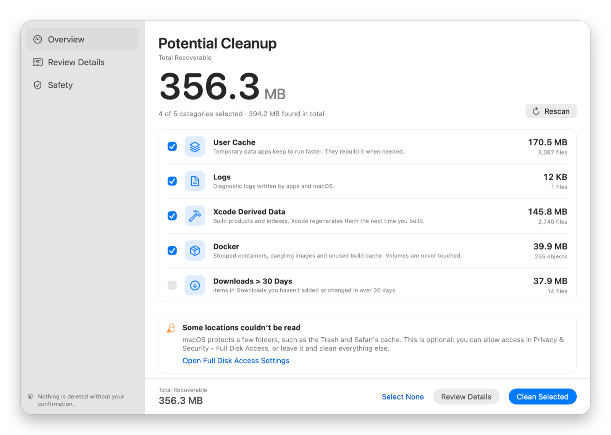
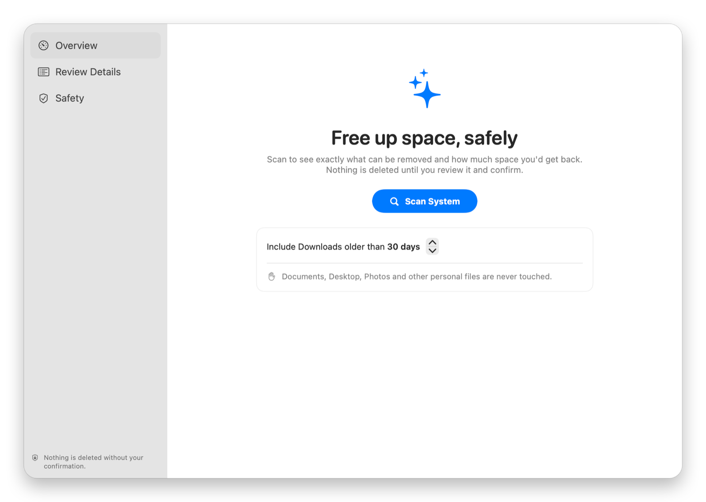
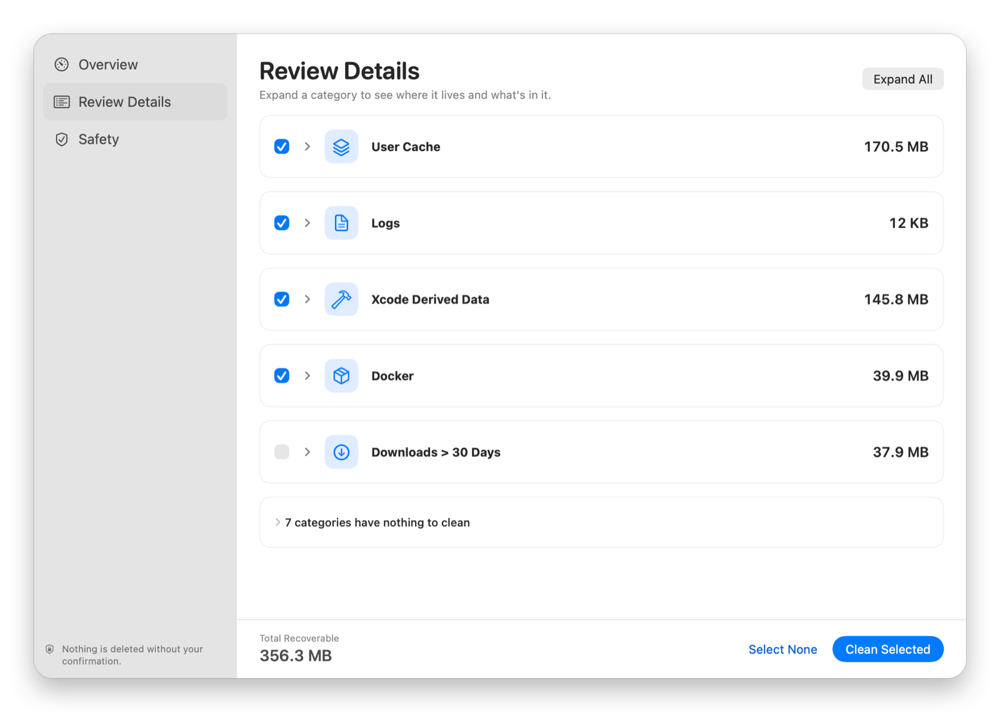
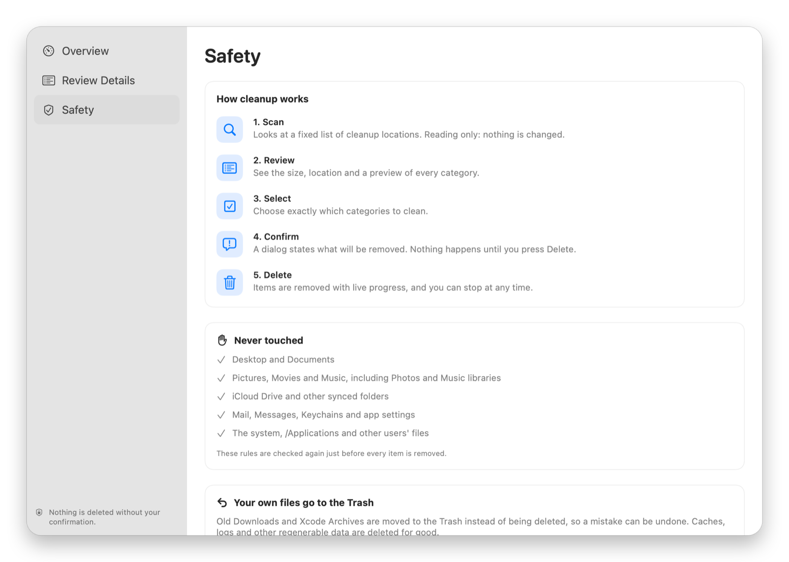

Version 1.0 · macOS 14 and newer · Open source
Free up space on your Mac. Safely.
Mac Cleanup Assistant finds caches, logs and build leftovers, shows you exactly what it found, and removes only what you approve.
Free and open source (MIT) · DMG installer · macOS 14 or later

How it works
You stay in the loop.
A scan only reads. Cleanup begins after you have seen the results and approved the selection.
-
1
Scan
See the size and file count for each supported location.
-
2
Review
Expand a category to inspect where it lives and what was found.
-
3
Select
Choose categories yourself. Your own files start unchecked.
-
4
Confirm
Check the totals in the dialog. Nothing is removed until you press Delete.
The app
Everything visible before you clean.



Screenshots show a scan of a developer Mac. Your sizes and categories will differ.
What it cleans
Useful targets. Clear boundaries.
Only the direct children of these folders are considered. The folders themselves stay in place.
- User Cache
~/Library/CachesDeleted - Logs
~/Library/LogsDeleted - Temporary Files
/private/tmp · 3+ days oldDeleted - Safari Cache
~/Library/Caches/com.apple.SafariDeleted - Chrome Cache
~/Library/Caches/Google/ChromeDeleted - Firefox Cache
~/Library/Caches/FirefoxDeleted - Trash
~/.TrashDeleted - Xcode Derived Data
~/Library/Developer/Xcode/DerivedDataDeleted - Homebrew Downloads
~/Library/Caches/HomebrewDeleted - Docker
Containers, dangling images, build cachedocker prune - Xcode Archives
~/Library/Developer/Xcode/ArchivesMoved to Trash - Older Downloads
~/Downloads · 30+ days by defaultMoved to Trash
Built around restraint
Personal files are out of bounds.
A safety policy rejects protected folders, system locations and anything that is not a direct child of an approved cleanup folder. It runs at scan time and again right before every removal.
Permissions stay optional. Full Disk Access is only needed for protected locations such as Trash and Safari cache. The rest of the scan works without it.
- Scan is read-onlyIt lists folders and reads file attributes, nothing more.
- Policy checked twiceDesktop, Documents, Photos, iCloud Drive, Mail and system folders are refused.
- Symlinks never followedA link inside a cache can't lead cleanup into your documents.
- Changed items are skippedAnything modified since the scan is left alone.
- Your files go to the TrashDownloads and Xcode Archives can be restored.
- Docker volumes untouchedVolumes are never pruned.
Get it
Install in a minute.
Requires macOS 14 Sonoma or later. Free, open source, no third-party dependencies.
Download the app
- Download Mac-Cleanup-Assistant.dmg from the latest release.
- Drag Mac Cleanup Assistant to Applications.
- On first launch, right-click the app and choose Open.
The release is ad-hoc signed and not notarized, so macOS asks you to confirm the first launch. If it is blocked, use System Settings → Privacy & Security → Open Anyway.
Or build from source
Requires Xcode 16 or later.
git clone https://github.com/supunsarachitha/MacCleanup.git
cd MacCleanup
./scripts/build-installer.shWrites build/installer/Mac-Cleanup-Assistant.dmg. Prefer Xcode? Open MacCleanup.xcodeproj, choose the MacCleanup scheme and press ⌘R.